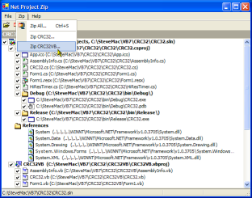

NetProject Zip (73K)
NetProject Zip (73K)
 5 Apr 2003
5 Apr 2003
Updated to version 0.50 of SharpZipLib
 Visual Basic Project Zip Utility
Visual Basic Project Zip Utility

NetProjectZip
Zip VS.NET Solutions and Projects cleanly from Explorer
NetProjectZip is an update of the VBPZip utility for VS.NET Projects and Solutions. The idea of the project is to make it easier to copy the important parts of a project or solution without any of the unnecessary files created as part of the build or IDE's working.
Note
Note that this sample is an early version of this code and probably hasn't been tested against enough Visual Studio projects and solutions to guarantee it working. If you have a solution it fails on, let me know and I'll look at enhancing the code.
Zipping in .NET
In VB, zipping was a fairly difficult thing to do for free. Eventually I settled on the Info-ZIP C DLLs as a method for doing this, but they had some difficulties including an awkward interface and had to be recompiled to support encryption. Luckily in .NET everything is a lot nicer: the people at ICSharpCode (authors of the amazing SharpDevelop open source .NET IDE) have released SharpZipLib as a side project. This is a completely native .NET version of the Zip and Unzip libraries (it supports GZip and Tar as well) transcoded from a great Java library providing the same functionality. You'll need to download a copy of SharpZipLib from their site to run this project, but I think you'll agree it's worth it.
Fun
The other features of this utility are an Owner-Draw Checked ListBox using the SystemImageList to show icons for each of the files and simple extensions to the MainMenu and ContextMenu objects to make them look something much closer to the VS.NET/Office XP menu styles. RTL support is currently missing, and you can't quite get the top-level menus to look right this way (the VS.NET/Office XP menus are implemented completely from scratch to fix the top level menu problem) but its not too far off!
The code also demonstrates how to add your application to a file's context menu in Explorer.